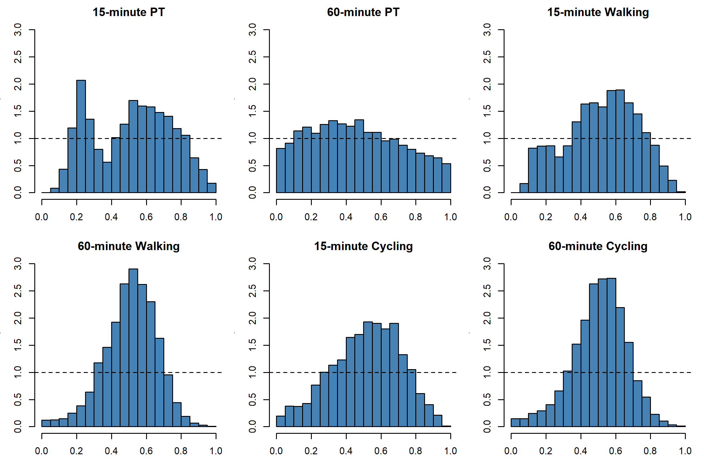

Appendix C BYM2 Model Results and Assessment
BYM2 Regression Model Results
| Variable | Model 1 | Model 2 | Model 3 | Model 4 | Model 5 | Model 6 |
|---|---|---|---|---|---|---|
| Intercept | 1.087 (1.010, 1.170) | 96.184 (94.492, 97.906) | 1.716 (1.618, 1.821) | 23.252 (22.878, 23.631) | 3.615 (3.466, 3.770) | 54.238 (53.567, 54.918) |
| IMD (z) | 1.040 (0.996, 1.087) | 1.006 (0.997, 1.015) | 1.022 (0.986, 1.058) | 0.988 (0.979, 0.998) | 1.023 (0.998, 1.049) | 0.993 (0.986, 1.000) |
| SUHII (z) | 1.084 (1.042, 1.128) | 1.018 (1.009, 1.027) | 1.076 (1.042, 1.111) | 1.016 (1.007, 1.025) | 1.041 (1.017, 1.064) | 1.010 (1.003, 1.017) |
| IMD × SUHII | 0.959 (0.929, 0.989) | 0.996 (0.990, 1.002) | 0.960 (0.937, 0.985) | 0.995 (0.988, 1.002) | 0.973 (0.956, 0.990) | 0.993 (0.988, 0.998) |
| Log pop. density (z) | 1.005 (0.963, 1.049) | 1.009 (1.001, 1.017) | 1.029 (0.994, 1.065) | 1.014 (1.004, 1.023) | 1.032 (1.007, 1.057) | 1.012 (1.006, 1.019) |
| Age 4 or under % (z) | 1.006 (0.970, 1.043) | 0.991 (0.984, 0.998) | 1.023 (0.993, 1.054) | 1.004 (0.996, 1.013) | 1.003 (0.983, 1.024) | 1.001 (0.995, 1.006) |
| Age 65 or over % (z) | 0.987 (0.940, 1.036) | 0.965 (0.956, 0.974) | 1.003 (0.965, 1.043) | 1.001 (0.990, 1.012) | 0.984 (0.958, 1.012) | 0.999 (0.991, 1.006) |
| Ethnic minority % (z) | 1.003 (0.941, 1.069) | 1.049 (1.034, 1.064) | 0.971 (0.922, 1.023) | 1.032 (1.017, 1.047) | 0.980 (0.945, 1.017) | 1.030 (1.019, 1.042) |
| Inner, Outer London | 0.908 (0.768, 1.074) | 1.003 (0.960, 1.048) | 0.940 (0.820, 1.078) | 0.970 (0.935, 1.008) | 1.072 (0.972, 1.182) | 1.036 (1.006, 1.067) |
Assessment of Model Fit and Predictive Calibration
Adjusted PIT histogram plots to visualise calibration diagnostics for predictive distribution of models (Leeuwenburg et al., 2026), with the adjusted PIT used for plotting calculated as follows (Gómez-Rubio, 2020):
\[\begin{equation} PIT_i^{\mathrm{adjusted}} = PIT_i - 0.5 \times CPO_i \tag{6.1} \end{equation}\]

Figure 6.1: Adjusted PIT distribution histograms across BYM2 models. Histograms are used to assess calibration of predictive distributions, where uniform distribution indicates for ideal calibration, U-shaped and inverted U-shaped indicates under-dispersion and over-dispersion respectively (Leeuwenburg et al., 2026).
Assessment of Residual Spatial Autocorrelation in BYM2 Models
| Model | Queens continguity - Moran’s I | Queens continguity - p-value | KNN = 4 - Moran’s I | KNN = 4 - p-value |
|---|---|---|---|---|
| 15-minute PT | 0.252 | p<0.001 | 0.284 | p<0.001 |
| 60-minute PT | -0.012 | p = 0.927 | 0.054 | p<0.001 |
| 15-minute Walking | 0.374 | p<0.001 | 0.411 | p<0.001 |
| 60-minute Walking | 0.485 | p<0.001 | 0.498 | p<0.001 |
| 15-minute Cycling | 0.330 | p<0.001 | 0.366 | p<0.001 |
| 60-minute Cycling | 0.343 | p<0.001 | 0.358 | p<0.001 |